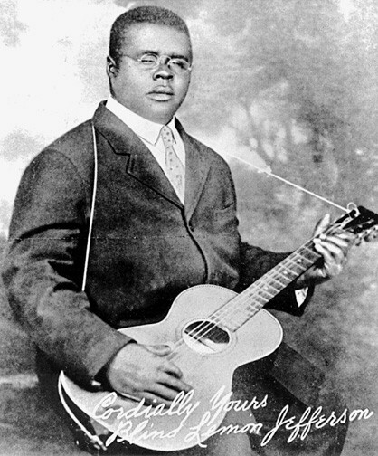

Week 1 · Foundation
Roots
Where Jazz Came From
Pre-existing musical traditions that merged over time to create jazz and its precursors.
African
European
Precursors
Siblings of Jazz
Styles that share the same roots as jazz — related but distinct. They developed alongside jazz rather than becoming it.
Blues
Ragtime
How it connects
Root
African Music
+
Root
European Music
→
Precursor
Blues
+
Precursor
Ragtime
→
Result
JAZZ
01
AFRICAN ROOTS
Characteristics of African Folk/Tribal Music
🎲
Improvisational in Nature
Music created spontaneously, not fixed to a written score — a principle that becomes central to jazz.
🥁
Syncopations & Polyrhythms
Off-beat accents and multiple simultaneous rhythmic layers — the rhythmic DNA of jazz.
🔁
Call and Response
A leader phrase answered by a group response. Appears in blues singing, gospel, and jazz soloing.
🌊
Groove
A cyclic, physical feeling of rhythm — the sense that music pulls you to move.
Evolved Forms
Field Hollers → Blues
Field hollers were vocal calls used by enslaved workers in the fields. They evolved into the Blues, carrying forward the 12-bar blues form, pitch decorations (gliding, scoop, doit, fall), and distinctive vocal tones (growl, throaty, falsetto).
Spirituals & Revival Hymns → Gospel
Religious songs blending African vocal traditions with Christian themes. Features: falsetto singing, call and response, syncopations. Eventually evolved into Gospel music.
Listening Examples
02
EUROPEAN ROOTS
🎺
Instruments
Western orchestral and band instruments — trumpet, trombone, clarinet, piano — gave jazz its instrumental vocabulary.
🎼
Harmony
The Western pitch and intervallic system, chords, and chord progressions provided jazz’s harmonic framework.
📝
Music Notation
Written notation allowed jazz to be published, distributed, and learned from sheet music — key to ragtime’s commercial spread.
🎉
Social Music Contexts
Brass/parade bands, ballroom dance bands, party bands, and minstrelsy all shaped early jazz performance contexts.
03
THE BLUES
Why the Blues Matters for Jazz
The blues is a jazz idiom — jazz musicians speak “blues” as a shared language. Its contributions include the 12-bar blues form (AAB), pitch bending and blues scale, and expressive vocal intonation. The blues also preceded R&B and boogie-woogie.
Type 01
Country Blues
Features:
Male singer, self-accompanied with guitar. Raw, rural, solo performance.
Male singer, self-accompanied with guitar. Raw, rural, solo performance.

Blind Lemon Jefferson
Country Blues Guitar
Paramount ad, 1926 · PD
—
Robert Johnson
“King of the Delta Blues”
Photo copyright disputed
Key Figures
“Papa” Charlie Jackson
Blind Lemon Jefferson
Robert Johnson
Blind Lemon Jefferson
Robert Johnson
Type 02
Classic Blues
Features:
Female singers, accompanied by other instrumentalists. Bridged folk music and the entertainment world.
Female singers, accompanied by other instrumentalists. Bridged folk music and the entertainment world.

Ma Rainey
“Mother of the Blues”
c.1917 · PD

Bessie Smith
“Empress of the Blues”
Van Vechten, 1936 · PD
Key Figures
Gertrude “Ma” Rainey
Mamie Smith
Bessie Smith
Mamie Smith
Bessie Smith

Classic Blues · Composer
W. C. Handy
“Father of the Blues”
An important classic blues composer (not performer) who transcribed and published blues music for a wider audience. His most famous work is St. Louis Blues.
Photo: Carl Van Vechten, 1932 · Public Domain (LOC)
04
RAGTIME (1896–1917)
Left Hand
OOM — PAH
March-style bass-chord alternation. The steady, “square” pulse comes from European march band tradition.
Right Hand
“RAGGING”
Syncopated melody over the steady bass. The off-beat accents come from African rhythmic tradition.
Form
Ragtime uses multiple strains — a form borrowed from European march music. Example: AABBACCDD. Each letter is a distinct melodic section repeated before moving to the next.
African & European Roots in Ragtime
African Roots
Right-hand syncopation (“ragging”)
Primarily composed and performed by African Americans
European Roots
Piano as instrument
Written notation (sheet music sold commercially)
Left-hand march beat
Harmony & chord progressions
Player Piano & Piano Roll (invented 1896)
A mechanical piano that reads punched paper rolls — it allowed ragtime to spread into homes without a live performer. The era’s equivalent of a streaming platform. Later evolved into MIDI in the digital age.
Key Figures

Piano Ragtime · Composer
Scott Joplin
1868–1917 · “King of Ragtime” · Pulitzer Prize (posthumous, 1976)
Also: James Scott, Tom Turpin, Joseph Lamb
Also: James Scott, Tom Turpin, Joseph Lamb
Photo: c.1907 · Public Domain

Band Ragtime · Bandleader
James Reese Europe
1880–1919 · Leading African-American bandleader in New York · Pioneer of ragtime ensembles
Also: John Philip Sousa
Also: John Philip Sousa
▶Castle House Rag — James Reese EuropeYouTube
▶The Stars and Stripes Forever — John Philip SousaYouTube
Photo: from Negro Musicians and Their Music (1936) · PD